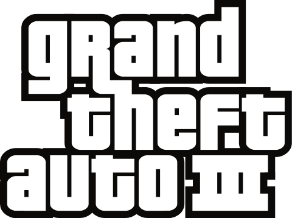

Gierkomania.pl

Opis Gry:
Grand Theft Auto III (GTA 3) – komputerowa gra akcji wyprodukowana przez DMA Design i wydana przez Rockstar Games w październiku 2001 na konsolę PlayStation 2, w maju 2002 na Microsoft Windows, w listopadzie 2003 na konsolę Xbox, a dla systemu OS X – 12 listopada 2010 w Europie i 22 listopada 2010 w Ameryce Północnej[5]. Jest czwartą częścią serii Grand Theft Auto. W Polsce została wydana przez firmę Play-It w roku 2002. Do dystrybucji gra trafiła w wersji oryginalnej, dopiero po jej premierze w Internecie pojawiła się oficjalna łata, spolszczająca grę do wersji kinowej (przetłumaczone napisy, dialogi pozostawione zostały w wersji oryginalnej). Aktualizacja zawierała także mapę metropolii, po której poruszał się gracz.
